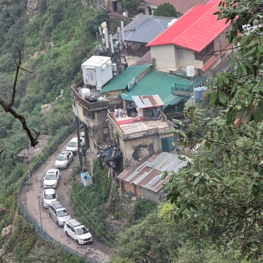
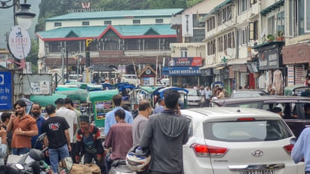

U ntil recently, the drive up the mountainous road to Landour was a highlight of a visit to the small hilltop town, as drivers enjoyed glorious Himalayan views and breathed in the cool forest air. Today, the journey is something to be endured with up to 1,000 cars a day clogging the narrow, winding road – slowing to navigate hairpin bends.
A journey that once took five to six hours from Delhi can now take up to 10 hours, especially at weekends in May and June.
Sitting in the foothills of the Himalayas at an altitude of more than 2,100 metres (7,000ft), Landour, a town of fewer than 4,000 people, was built by the British Indian army in the early 1820s as a convalescence station, thanks to its cooler temperatures.
The road between Mussoorie and Landour, where traffic jams have become routine.Photograph: Abhishek Bhatt/The Migration Story
Although it is little more than two miles (4km) from Mussoorie, a popular tourist destination known as the “queen of the hills”, Landour was considered off the beaten track and attracted few visitors.
But today, the oven-like heat in India’s cities has led to a big increase in visitors to the country’s popular hill stations, encouraging people to explore lesser-known, more remote villages such as Landour. Now, this once tranquil haven, where tourists could delight in birdsong and the scent of warm cakes coming from the teahouses, is now filled with the sounds of honking horns and the reek of exhaust fumes.
Exposure during the pandemic, when social media influencers started to visit Landour and highlight its isolation and lack of crowds in videos, has also contributed to its rising popularity.
“Before this, very few tourists would come here,” says Ankita Singh, chief executive of Landour cantonment board. “The [social media] reels made it popular. In the last five to six years, the number of tourists has grown exponentially. Recently, a 62-year-old man died in the ambulance before he could reach the hospital in Mussoorie, owing to the traffic jam.”
In 2024, more than 2 million tourists visited Landour and Mussoorie, up from 1.47 million visitors in 2023 and 1 million in 2020. It can take up to an hour to drive the short distance between the two towns, and Landour’s streets are now as chaotic as Mussoorie’s, with traffic at a standstill and queues outside cafes and tearooms.
The rise in visitors to the village has prompted the authorities to introduce measures to curb numbers.
In June, the cantonment board introduced a limit to the number of cars, stipulating a maximum of 200 a day. Police are stationed at the entrance to the village to monitor traffic but online permits are planned to automate the process in the coming months.
Mussoorie’s Mall Road. Daily limits for car numbers have been introduced to reduce traffic.Photograph: Abhishek Bhatt/The Migration Story
In 2024, India experienced its longest recorded heatwave since 2010 . Many states experienced daytime temperatures above 40C (104F) for an entire month, leading to more than 44,000 cases of heatstroke. By April 2025, more than 10 states had already had severe heatwaves, according to a study by the thinktank Council on Energy, Environment and Water, released in May.
The maximum temperature in May and June in Delhi this year hovered between 43C and 48C, according to India’s meteorological department . By contrast, Landour’s top temperature in June was a more comfortable 24C.
But climate experts are warning that temperatures are rising at higher altitudes, too, and will pose a threat to hill villages. “There is a significant rise in the temperatures during summer in some popular hill stations. Places like Nainital, Mussoorie and Munsiyari were extremely hot in 2024,” says Vishal Singh, director of the Centre for Ecology Development and Research (Cedar), which has been tracking temperatures in hilly regions for decades.
The warmer weather has led to soaring sales of fans and air-conditioners . “Homes and hotels in Mussoorie didn’t have fans,” says Anil Prakash, 70, owner of Prakash Stores in Landour, an almost century-old shop selling homemade jams, pickles, peanut butter and oat cookies.
Visitors cool off in the waters beneath Kempty Falls near Mussoorie, a popular spot with tourists.Photograph: Creative Touch/NurPhoto/Shutterstock
“We now feel the need for fans due to the increased heat. Every year, there seems to be a change in the weather. It is just getting hotter,” says Prakash.
Pre-monsoon droughts have also led to water scarcity in the summer months.
“This heat will have a cascading impact,” says Manish Kumar, a researcher at a leading thinktank, the Center for Study of Science, Technology and Policy (CSTEP). “As hill stations on the peripheries start attracting more crowds, they will become like Landour.”
“A small village like Sitla [Mukteshwar] – located on the edge of a reserve forest and with a population of less than 500 people – now has 15 to 20 resorts,” he adds.
Trees have been cut down to make way for hotels and cafes to cater to the growing number of visitors. The construction boom – much of it haphazard – is contributing to emissions, local people say.
“Many trees have been cut and Landour is not the same,” says JP Singh, a retired merchant navy captain who lived in the town from 2000 to 2010.
Rohit Kumar sells his fruit to tourists stuck in Mussoorie’s traffic. But for Fareed Rai, whose shop gets few passing tourists, the heat and jams are ruinous.Photograph: Sapna Gopal /The Migration Story
Rising temperatures in the hill towns are affecting migrant workers, too. But for some, the heat crisis has been a boon for business.
“If it’s hot in the plains, our business is good,” says Naresh Chauhan, 28, a tour guide who migrated to Mussoorie four years ago from the Hindu pilgrim town of Yamunotri.
“I was hoping I can earn well here and improve my family’s financial condition,” he says. The bet paid off: “I earn 20,000 to 25,000 rupees [£172 to £215] a month, if business is good.”
Ajit Singh Chauhan, who also migrated to Mussoorie from Uttarkashi to work as a tour guide, spends his days taking tourists to the popular Kempty waterfalls, the local market and around Landour
He credits his earnings in 2024 to the heat, describing India’s hottest year on record as a “fantastic tourist season” in Mussoorie.
“The hotter it is, the better it is for us,” he says.

Tour guides Ajit Singh Chauhan, left, and Sharad Singh. Ajit described India’s hottest year on record as a ‘fantastic tourist season’ in Mussoorie.Photograph: Sapna Gopal/The Migration Story
But others drawn by the swelling crowds of visitors are now questioning their decision. Rahul Singh, who moved from Uttar Pradesh’s Hardoi district five years ago, sells roasted chickpeas and nuts in paper cones to tourists walking around Mussorie’s bazaar or seated in their cars, windows rolled down as they inhale the crisp air of the hills.
“Business was good then. I managed to earn 14,000 to 20,000 rupees a month,” says Singh, standing by a busy road in Mussoorie as air-conditioned cars roll by, their windows firmly shut.
“Sheesha khulega tabhi toh kuchh bikega na [I can sell if the car window is open],” he says.
Fareed Rai, a fruit seller, came from Uttar Pradesh a year ago but is considering returning to his village. He installed a fan to keep his roadside shop cool but it fails to draw in many customers, who prefer to stay in their air-conditioned cars. “Once the lease period of my shop is over, I just want to go back,” he says.
- A version of this story first appeared in the Migration Story , India’s first newsroom to focus on the country’s vast migrant population